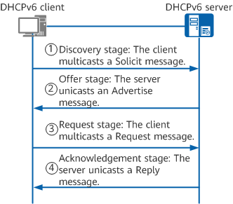
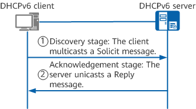
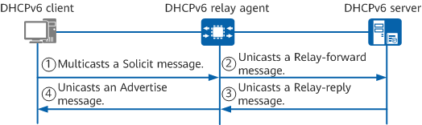

This section describes how a DHCPv6 server allocates addresses and network configuration parameters to newly connected DHCPv6 clients (that is, those that connect to the network for the first time). If a DHCPv6 relay agent exists on the network, the working mechanism is different.
This scenario involves two allocation modes: DHCPv6 four-message exchange and DHCPv6 two-message exchange.
DHCPv6 four-message exchange
The DHCPv6 four-message exchange is used when multiple DHCPv6 servers exist on the network.

Discovery stage: The DHCPv6 client discovers a DHCPv6 server and requests the server to allocate an IPv6 address and network configuration parameters.
The DHCPv6 client sends a Solicit message to discover a DHCPv6 server and request the server to allocate an IPv6 address and network configuration parameters. Because the DHCPv6 client does not know the IPv6 addresses of DHCPv6 servers, it multicasts a Solicit message to all DHCPv6 servers on the same link. The Solicit message carries the client's DUID, IAID, requested non-temporary address, and requested network configuration parameters.
Offer stage: The DHCPv6 server offers an IPv6 address and network configuration parameters.
The DHCPv6 server selects an idle IPv6 address from the address pool on the same network segment as the IPv6 address of the interface that receives the Solicit message. The server then unicasts an Advertise message carrying the allocated IPv6 address to the DHCPv6 client. The Advertise message carries the server's DUID, client's DUID, server's priority, IPv6 address and lease assigned to the client, and network configuration parameter list.
The DHCPv6 server classifies IPv6 addresses in the address pool into different IPv6 address lists based on their states.
Request stage: The DHCPv6 client selects an IPv6 address.
Because Solicit messages are multicast, all DHCPv6 servers on the same link reply with Advertise messages upon receipt of the Solicit messages. If multiple DHCPv6 servers send Advertise messages to the DHCPv6 client, the client selects the Advertise message with the highest server priority. If the DHCPv6 servers have the same priority, the client selects the Advertise message that carries the required configuration parameters. The client then multicasts a Request message to all DHCPv6 servers on the same link. The Request message contains the DUID of the DHCPv6 server selected by the client, DUID of the client, and IPv6 address of the client.
Acknowledgment stage: The DHCPv6 server acknowledges the IPv6 address offered to the client.
After receiving the Reply message, the DHCPv6 client sends DAD packets to check whether any other terminal is using the IPv6 address allocated by the server. If the client receives no response within the specified time, it can use the IPv6 address. If the client receives a response, it cannot use the IPv6 address because another terminal is already using it. In this case, the client unicasts a Decline message to the server and resends a Solicit message to request another IPv6 address. After receiving the Decline message, the server lists the IPv6 address carried in the message as a conflicting one.
DHCPv6 two-message exchange
The DHCPv6 two-message exchange is used when only one DHCPv6 server exists on the network. In the DHCPv6 two-message exchange, a DHCPv6 client receives only an IPv6 address allocated by a DHCPv6 server. This means that the offer and request stages, as used in the DHCPv6 four-message exchange, are not required in the DHCPv6 two-message exchange.
The DHCPv6 two-message exchange is used only when a Solicit message sent by the DHCPv6 client carries the Rapid Commit option (indicating that the client expects the server to quickly allocate addresses and network configuration parameters) and the DHCPv6 server supports fast address allocation. In other cases, the DHCPv6 four-message exchange is used.

Discovery stage: The DHCPv6 client discovers a DHCPv6 server and requests the server to allocate an IPv6 address and network configuration parameters.
The DHCPv6 client sends a Solicit message to discover a DHCPv6 server and request the server to allocate an IPv6 address and network configuration parameters. Because the DHCPv6 client does not know the IPv6 addresses of DHCPv6 servers, it multicasts a Solicit message to all DHCPv6 servers on the same link. The Solicit message carries the Rapid Commit option, the client's DUID, requested non-temporary address, and requested network configuration parameters.
Acknowledgment stage: The DHCPv6 server acknowledges the IPv6 address offered to the client.
When the DHCPv6 server supports fast address allocation and receives a Solicit message carrying the Rapid Commit option, it selects an available IPv6 address from the address pool on the same network segment as the IPv6 address of the interface that receives the Solicit message. The server then unicasts a Reply message to the DHCPv6 client. The Reply message carries the Rapid Commit option, server's DUID, client's DUID, server's priority, IPv6 address and lease assigned to the client, and network configuration parameter list.
After receiving the Reply message, the DHCPv6 client sends DAD packets to check whether any other terminal is using the IPv6 address allocated by the server. If the client receives no response within the specified time, it can use the IPv6 address. If the client receives a response, it cannot use the IPv6 address because another terminal is already using it. In this case, the client unicasts a Decline message to the server and resends a Solicit message to request another IPv6 address. After receiving the Decline message, the server lists the IPv6 address carried in the message as a conflicting one.
This scenario also involves two allocation modes: DHCPv6 four-message exchange and DHCPv6 two-message exchange. The working principles of the two modes are the same as those in the scenario where no DHCPv6 relay agent exists. For details, see DHCPv6 Server Allocating Addresses and Network Configuration Parameters to Newly Connected DHCPv6 Clients When No DHCPv6 Relay Agent Exists. The following describes how a DHCPv6 server allocates an address and network configuration parameters to newly connected clients in the DHCPv6 two-message exchange.

After receiving the Advertise message, the DHCPv6 client sends DAD packets to check whether any other terminal is using the IPv6 address allocated by the server. If the client receives no response within the specified time, it can use the IPv6 address. If the client receives a response, it cannot use the IPv6 address because another terminal is already using it. In this case, the client unicasts a Decline message to the server and resends a Solicit message to request another IPv6 address. After receiving the Decline message, the server lists the IPv6 address carried in the message as a conflicting one.